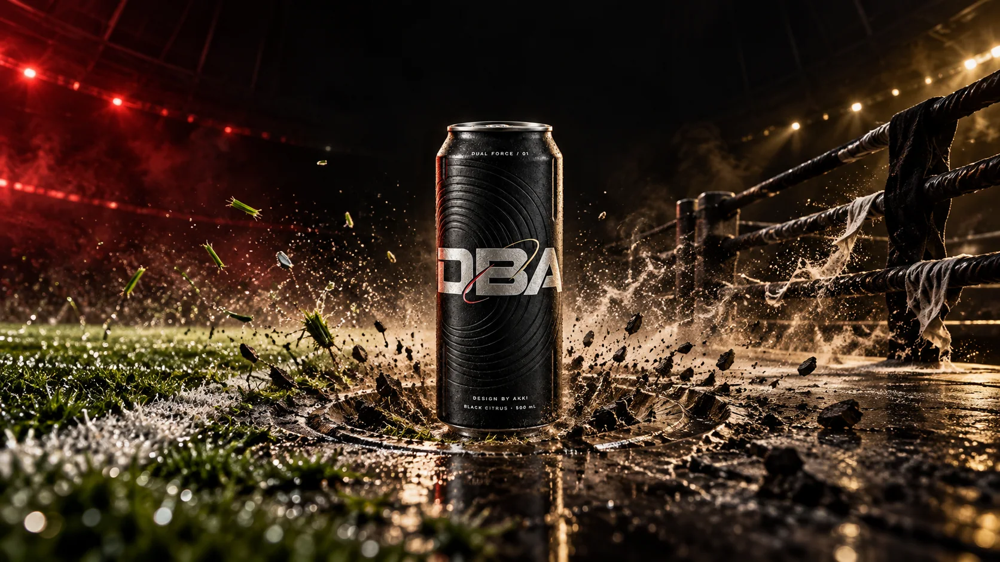
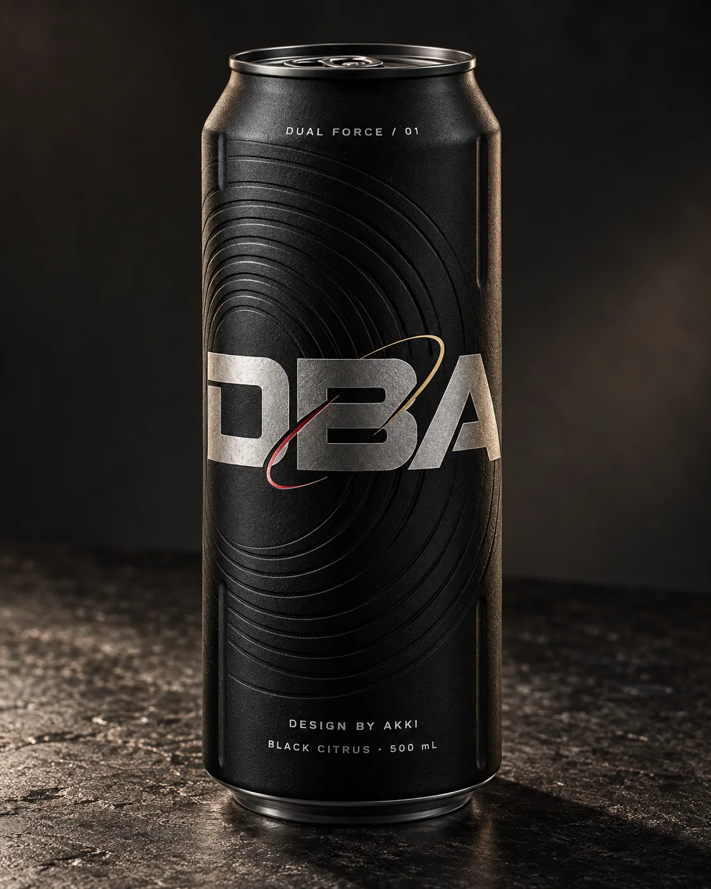
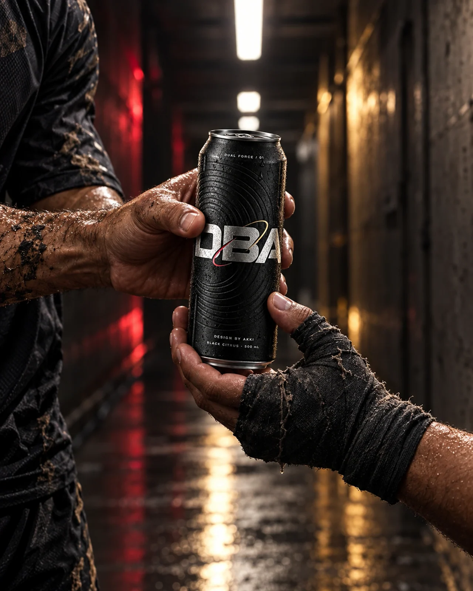
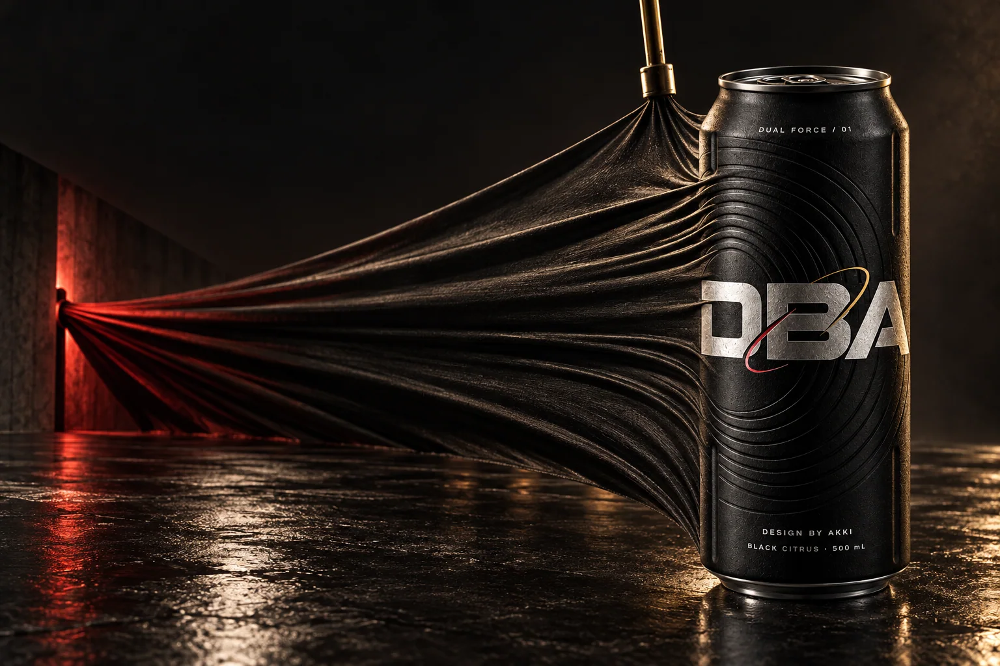
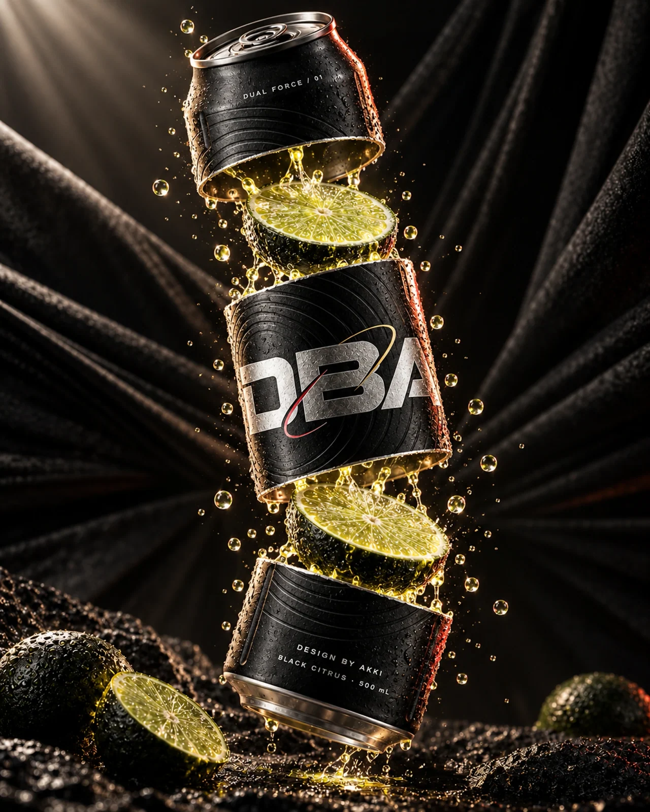
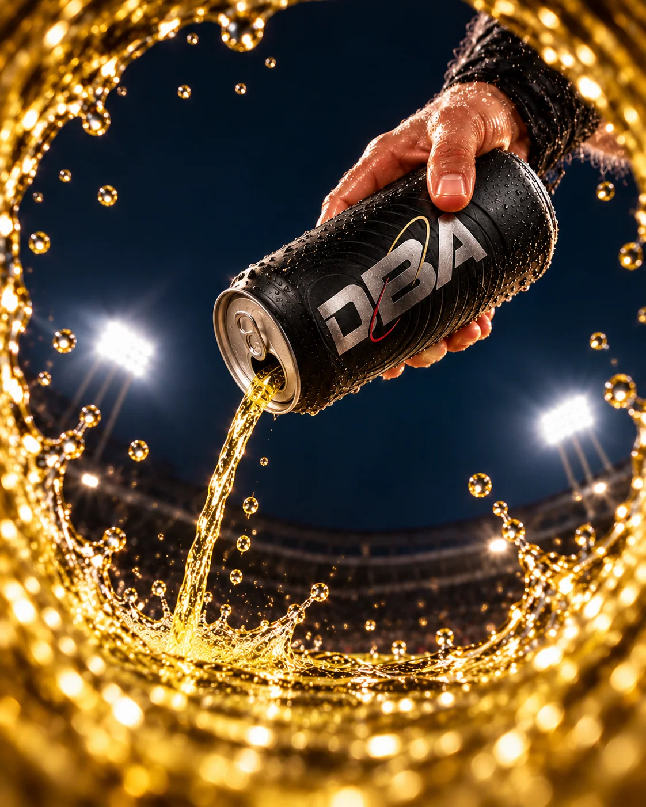

← All work
Drinks · Fictional identity
DBA / DUAL FORCE
A matte-black performance drink shaped by opposing forces.

The idea
Football precision and fight-ring tension meet in one tactile can. Pressed rings carry energy through the packaging and become physical scenery in the campaign.
Making the world
Titanium lettering, mineral-black grain and one broken red-to-gold line unify product, arena, handoff, tension and liquid studies. The product and imagined celebrity pairing are fictional; no endorsement is implied.
The series




